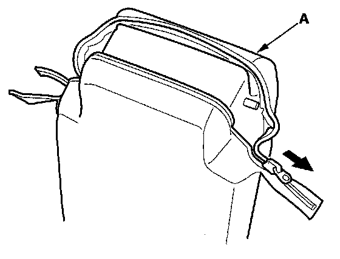
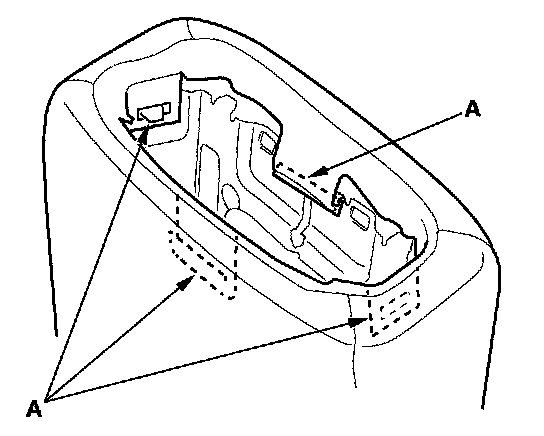
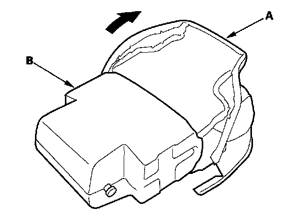

Second Row Seat Armrest Cover
Second Row Seat Armrest Cover ReplacementNOTE: Take care not to tear the seams or damage the seat covers.
1. Remove the armrest.
2. Remove the armrest beverage holder from the armrest.

3. Unzip the armrest cover (A).

4. Release the hooks (A).

5. Pull back the armrest cover (A) all the way around, then separate the armrest cover and pad (B).
6. Install the cover in the reverse order of removal, and to prevent wrinkles, make sure the material is stretched evenly over the pad before securing the hooks.